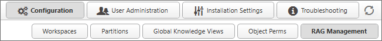
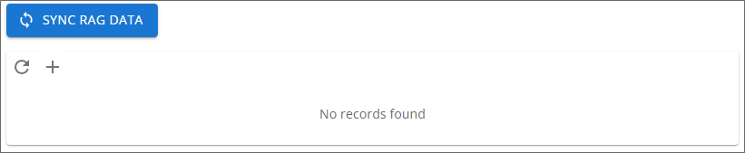
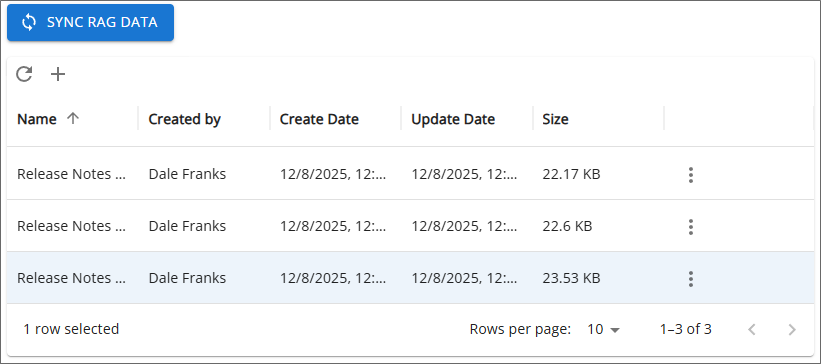
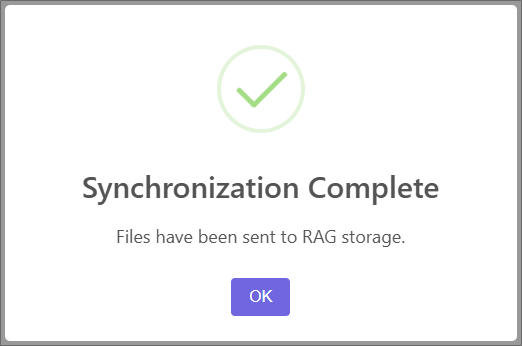
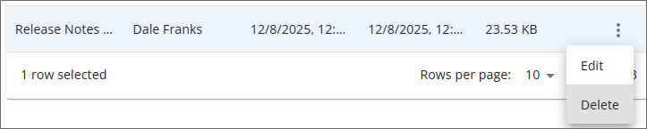
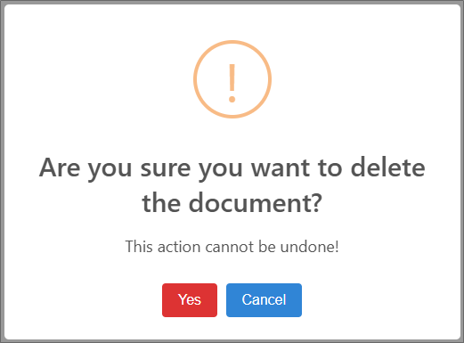
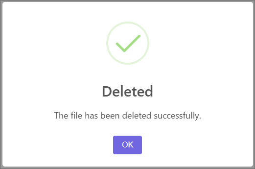

This topic discusses a feature that is under active development, and is subject to change without notice.
This topic discusses a feature that is under active development, and is subject to change without notice.
This topic discusses a feature that is under active development, and is subject to change without notice.
Installations using Process Director v6.1.500 that also have the Approvia AI AI feature enabled can upload custom documentation to be ingested into Approvia AI via the Rag Management page.

Retrieval-Augmented Generation, or RAG, is the term used for custom data used to train Approvia AI for use in responses, such as chatbot conversations. Examples of RAG data might be documentation for complex applications you've created, or for the custom UI and workspaces that your users can access.
Approvia AI will ingest and train itself on these RAG documents to provide responses to user prompts/queries to the system. This RAG data will be used in addition to the standard information from BP Logix, like the general product documentation. This feature will enable Approvia AI to answer both general queries about the operation of the system, as well as queries about the custom applications or user interface that your organization has constructed.

To add RAG data to the system, click the Add (+) icon. When you do, the Open dialog box will open to enable you to navigate to the document(s) you wish to add to the system and select them. Allowable document formats for RAG data are: .txt, .pdf, .docx, .doc, .xlsx, .xls, .csv, .json, .xml, and .md. Once added to the system, the uploaded documents will appear in the list of RAG data documents in a Data List control containing 10 documents per list page.

Once the documents have been uploaded, you can send them to Approvia AI for training by clicking the Sync RAG Data button. A message will appear on the page to notify you that the documentation has been synchronized to Approvia AI.

You can dismiss this message by clicking the OK button.
A RAG document can be deleted from Approvia AI by accessing the Menu icon on the right side of the document's row, and selecting the Delete menu item.

A confirmation dialog box will appear to confirm the document's deletion.

You can escape the deletion process by clicking the Cancel button. Clicking the Yes button will permanently delete the document from the system, and a message dialog will appear to notify you that the document has been deleted.

Once a document has been deleted, click the Sync RAG Data button to synchronize the local set of documents with Approvia AI, to remove the RAG document from Approvia AI.